Kogito Serverless Workflow at OpenShift Commons Briefing 2021

Following Monday (April 19th), we will have a presentation during the OpenShift Commons Briefing at 9 am PST. In this talk, we will briefly introduce the CNCF Serverless Workflow Specification project and talk about the Kogito implementation and Knative Eventing integration.
We prepared a special demonstration just for this talk available at our Github Examples repository later next week. In this demo, we will run through a use case to understand how to use Kogito Serverless Workflow to orchestrate CloudEvents on top of Knative Eventing.
Come to the talk, and let’s have some enjoyable time together learning about events and workflows!